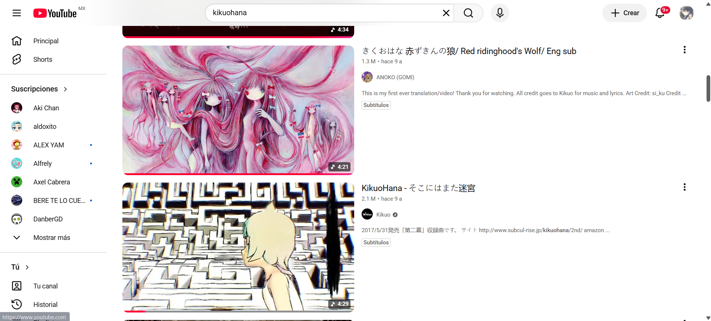
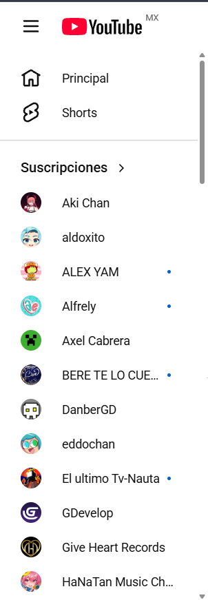
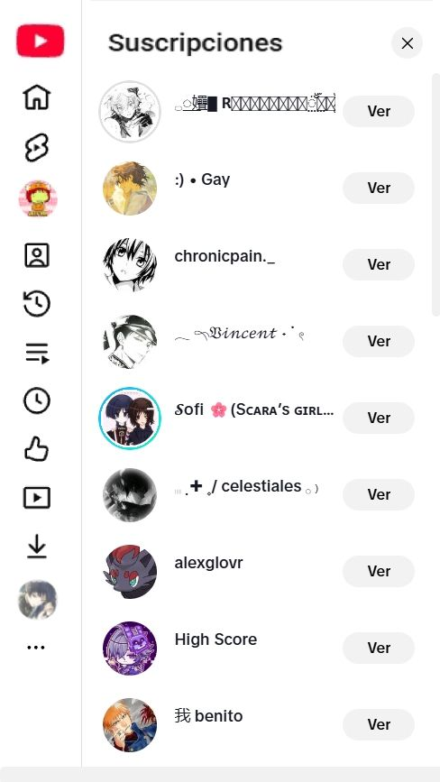

Yo escogí YouTube, la funcionalidad que quiero cambiar es como se ven y despliegan las suscripciones, haciendo que sea mas amigable con el usuario, se vea mejor y funcione de mejor manera.


Aquí podemos ver como se ve la pantalla completa de YouTube y como se ven los suscriptores al desplegar “ver más”, sin embargo, me parece algo molesto que al momento de desplegar se tenga que bajar toda la lista para poder ver lo demás y/o regresar a como se veía al inicio.

Mi propuesta es que se cambie el “mostrar más” por “ver todo” y ya no se desplegaría la lista ocupando el espacio de abajo, sino que ahora se desplegaría un nuevo menú donde están todas las suscripciones, en la cual puedes scrollear y quitarla cuando ya no la necesites.